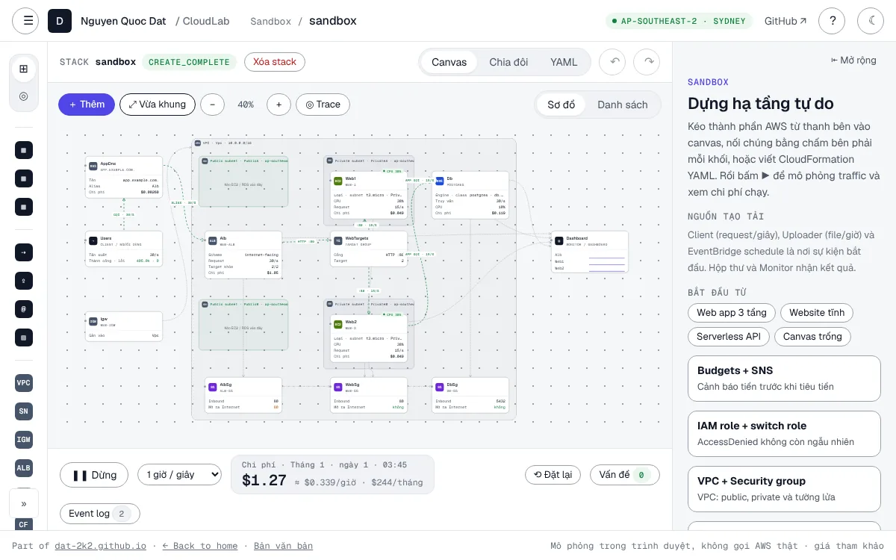

Projects · 4 live demos
Everything I’ve built in public.
Interactive demos that run in the browser — open them, play with them, read the source.


No projects in this category yet.

Projects · 4 live demos
Interactive demos that run in the browser — open them, play with them, read the source.

No projects in this category yet.